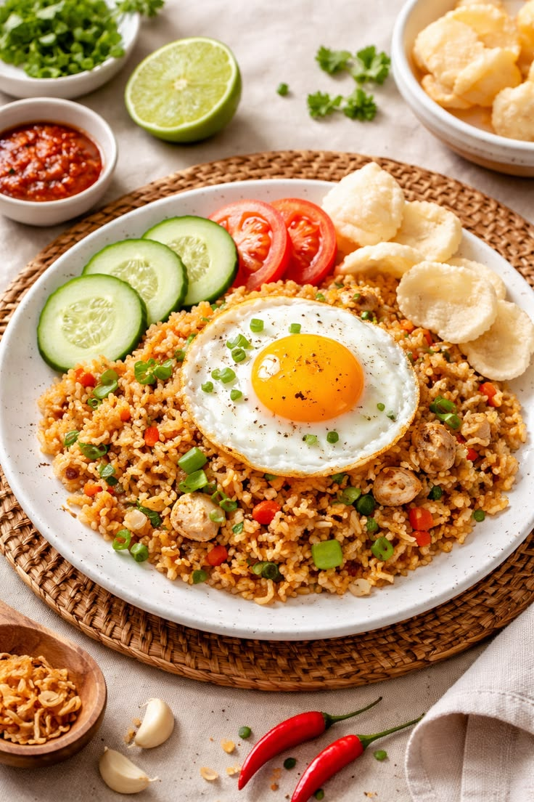
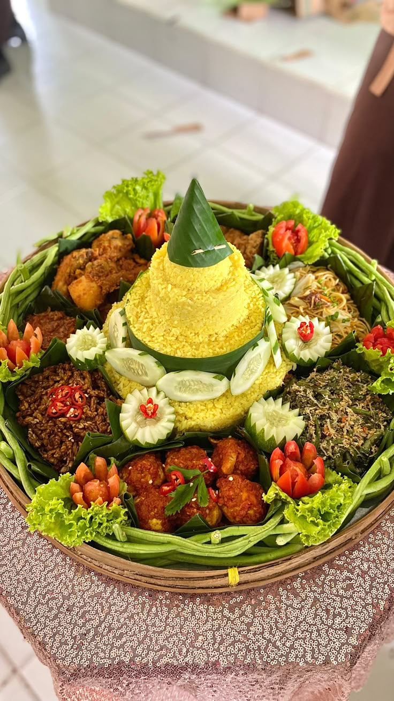

01HIDANGAN UTAMA
Nasi Goreng Nusantara
Nasi goreng dengan racikan bumbu dan aroma rempah khas Indonesia.
Rp18.000
PESAN ↗
01 — CERITA RASA INDONESIA
Mengenal kekayaan kuliner Nusantara lewat rempah, resep turun-temurun, dan sajian yang selalu punya cerita. Temukan hidangan favoritmu bersama JagatSaji.
Jelajahi Sajian ↗KULINER INDONESIA · CERITA DI SETIAP SAJIAN
